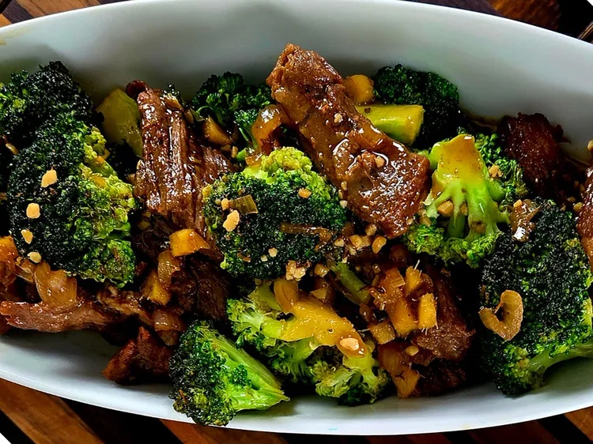

Home
Cheesy Buldak Ramen Casserole

By Shelia Johnson
Description
This steak and broccoli stir fry is quick and delicious. In a sauce with ginger, honey, soy sauce, and sesame oil, it's loaded with flavor. Serve over rice.
Ingredients
- 2 tablespoon grapeseed oil or other cooking oil
- 1 pound ribeye steak, cut into bite-sized pieces
- salt and freshly ground black pepper to taste
- 1 cups soy sauce, or more as needed
- 1/2 cup honey
- 1/4 cup sesame oil
- 4 garlic cloves, chopped
- 2 tablespoons fresh ginger, chopped
- 1 shallot, chopped
- 1 1/2 cups fresh broccoli florets
- 2 green onions, chopped, for garnish
Steps
- Heat grapeseed oil in a cast iron skillet over medium heat. Season steak with salt and pepper.
- Add steak to skillet and cook for 1 to 2 minutes on each side. Remove from heat and set aside.
- Whisk soy sauce, honey, sesame oil, garlic, ginger, and shallot together in a bowl. Pour sauce into the skillet and bring to a gentle simmer. Add broccoli and cook for 2 minutes.
- Add steak back into the skillet; cook until hot, 1 to 2 minutes. Sprinkle with chopped green onions to serve.